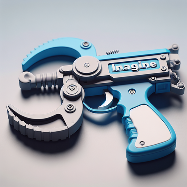

Final Project
Ideas & Interviews
Ideas & Interviews
Dailon, Allie, and I decided we wanted to solve a problem in Gosman, the athletic center. We began our project by conducting interviews with students and faculty who regularly visit the gym, including one of the athletic coordinators. Throughout the interviews, a common theme was navigation confusion in Gosman. Therefore, we focused on improving users' ability to navigate Gosman without confusion.
We came up with four "How Might We" statements, and spent time developing ideas for each. We then placed the ideas into categories by type (physical, location based, etc) before sorting out the ideas we deemed too comlpex for this project. We ended up choosing a combination of navigation assistance ideas: a digital website map with routes to popular locations in Gosman, a physical map showing off the routes, and physical signs for each room, all of which will be color coordinated.


We created two storyboards, depicting our thought proccess and the journey that a user takes.


Design Detour
We detoured from our original idea and spent a few hours brainstorming other solutions. We chose to focus on one of our previous “how might we” statements, “How might we help people with mobility issues access Gosman's equipment more easily?" Simple answers such as ramps and more doors were thrown out, before we came across two possible solutions.
Our first idea was to build an automated cart that would roll under discarded items on the floor, picking them up with a press of a button. The floor of the cart would be automated to rise, delivering the items to hand level without the user needing to bend down and pick them up. However, we agreed that this was a very complicated solution, and one that we would not be able to execute fully with our current knowledge of automations.
Our second idea was inspired by the grabbing hook games at arcades. The user would hold a claw, which when pressed/squeezed would extend down to the floor, allowing them to grab onto a dumbbell/other item and bring it up to hand level.

Feedback
We partnered with another group to receive feedback on our basic prototypes. As discussed, we'd created signage, a 3D-designed physical map, and a digital map at that point. The feedback was pretty positive -- they didn't have much to say in regards to things we could improve. People, both in and out of the class, seemed to like our idea. They had a few minor tweak suggestions, but mostly they were curious about our thought proccess and what else we would be doing. They wanted to know in more detail about how we planned to print our 3D map. The most useful feedback we received was from Professor Krones, who had a great suggestion about attaching each 3D printed floor together to create a stackable map.
In regards to project principles, something we noticed was that our interviewees wanted to feel secure in walking around Gosman. They didn't want to feel confused or lost, feelings that might deter them from going to the gym in the first place. Therefore, based on this feedback, we designed our next prototypes to be eye-catching, allowing people to spot them from down the hall and feel reassured that they were in the right place. Specifically because of this feedback, we made our phsyical signs using colors such as neon orange and bright pink, colors which almost certainly would not be found in Gosman already. This would allow them to stand out. Similarly, when 3D printing our physical map, we chose bright colors that followed a pattern -- the top layer is yellow, the middle layer is yellow-green, and the bottom layer is green. Bright colors allow for users to spot them instantly, and coordinating the layers makes it so if the layers fall apart, one can easily put them back together by placing them in color order. By adding these bright colors, we considered and heard our testers' needs, as well as improving our character design principles.
For our designer principles, the feedback we received was pretty positive and gave us confidence in the work we'd done so far. It allowed us to take the basic plan and explore adding more details, such as physical interconnecting maps, colors, and adding a website to coordinate our digital maps.
Adjusting our How Might We statements, we came up with these:
1. How Might We Help Visitors Feel More Comfortable Navigating Gosman?
2. How Might We Provide Visitors With Multiple Ways To Navigate Gosman?
3. How Might We Create Digital And Physical Navigation Solutions That Work With Each Other?
Going back to our original idea, we also brainstormed some quick additions to our prototype. Some, marked in red, we implemented, while others we discussed and agreed were best left off the final product.
1. Add colors vs black and white
2. Created individual 3D printed maps for each person who comes to Gosman
3. Create an app for our map
4. Stack the 3D printed layers together
5. Turn the 3D printed map into a keychain for easy carrying
6. Add dots to the floors of Gosman to mark routes to take
7. Get a golf cart for each visitor
8. Use the same map design as a basis for the digital map and 3D printed one
9. Add our website to Brandeis' website
10.Turn the doors of each room into a giant sign


We implemented the new changes and worked on our tasks. Soon, it was time to work on the presentation itself. View the final presentation, website, and implementation guide below.